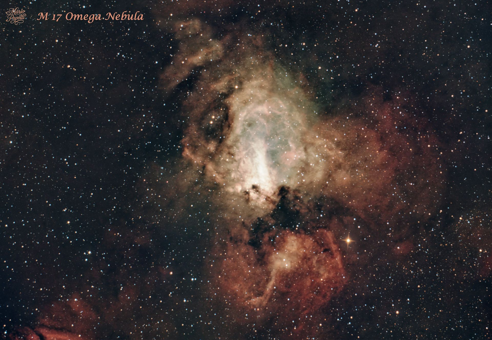
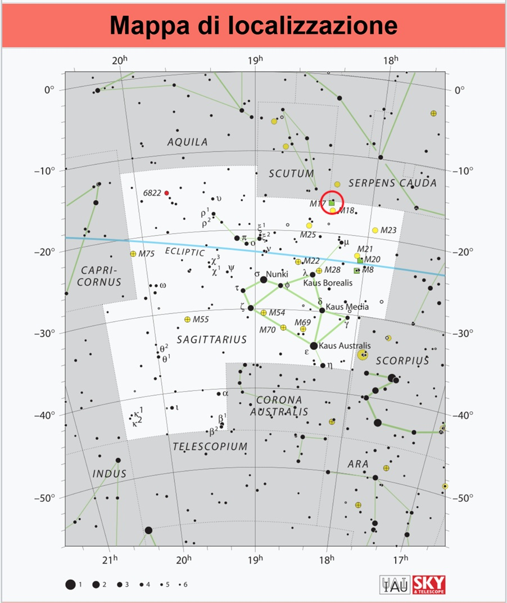

Messier 17 • NGC 6618
Nebulosa a emissione nella costellazione del Sagittario
Messier 17 • NGC 6618
Emission Nebula in Sagittarius

La Nebulosa M 17 è conosciuta con numerosi nomi: Nebulosa Omega, Nebulosa Cigno, Nebulosa Aragosta e Nebulosa Ferro di Cavallo. M 17 is known by several names: Omega Nebula, Swan Nebula, Lobster Nebula and Horseshoe Nebula.
È una nebulosa a emissione, scoperta da de Chéseaux nel 1746 e riscoperta da Charles Messier nel 1764, situata nella costellazione del Sagittario. It is an emission nebula, discovered by de Chéseaux in 1746 and rediscovered by Charles Messier in 1764, located in the constellation of Sagittarius.
| Nome Name | M 17 – NGC 6618 |
| Costellazione Constellation | Sagittarius |
| Tipo di oggetto Object Type | Nebulosa a emissione Emission nebula |
| Distanza Distance | ~ 6,000 light-years |
| Magnitudine apparente Apparent Magnitude | 6.0 |
| Dimensione apparente Apparent Size | 11′ |
Grazie alla sua luminosità, la Nebulosa Omega è piuttosto facile da localizzare nel periodo compreso fra giugno e ottobre. La mappa mostra la posizione di M 17 nella costellazione del Sagittario e alcuni dei principali riferimenti presenti nella stessa area di cielo. Thanks to its brightness, the Omega Nebula is relatively easy to locate between June and October. The map shows the position of M 17 in Sagittarius and some of the main reference objects in the same area of sky.

Questa è la mia versione della Nebulosa Omega, realizzata utilizzando riprese effettuate in varie nottate di settembre e ottobre dell'anno scorso. La ripresa complessiva comprende 2 ore e 20 minuti con filtro a banda stretta per la nebulosa e 4 ore e 20 minuti con filtro a banda larga per le stelle. This is my version of the Omega Nebula, created using images captured over several nights in September and October last year. The total acquisition includes 2 hours 20 minutes with a narrowband filter for the nebula and 4 hours 20 minutes with a broadband filter for the stars.
Tempo totale di integrazione: 6 ore e 40 minuti Total integration time: 6 hours 40 minutes
| TelescopioTelescope | GSO Newton 154/600 |
| Camera principaleMain Camera | ZWO ASI 294 MC Pro |
| Telescopio guidaGuide Scope | 60/240 mm |
| Camera guidaGuide Camera | ZWO ASI 120 Mini |
| MontaturaMount | Sky-Watcher HEQ5 SynScan GOTO |
| AcquisizioneAcquisition | ZWO ASIAIR Pro |
| ElaborazioneProcessing | PixInsight |
L'immagine è stata elaborata in RGB con PixInsight. The image was processed in RGB using PixInsight.
La particolarità di questa ripresa è l'utilizzo di due tipologie di filtri: la banda stretta per valorizzare la nebulosa e la banda larga per le stelle. Le immagini sono state raccolte in varie nottate di settembre e ottobre, fino a raggiungere un'integrazione complessiva di 6 ore e 40 minuti. The distinctive feature of this image is the use of two types of filters: narrowband for enhancing the nebula and broadband for the stars. The images were collected over several nights in September and October, reaching a total integration time of 6 hours 40 minutes.